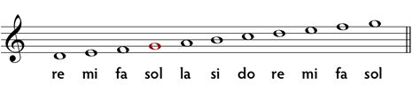

La teoria de la música és la branca de les ciències de la música que es dedica a l'estudi del llenguatge musical. Aquest camp d'estudi involucra la investigació dels diversos elements musicals, entre ells el desenvolupament i la metodologia per a analitzar, escoltar i compondre música. En un sentit més concret, la teoria de la música es dedica a l'estudi dels elements principals d'aquest llenguatge, que són el ritme, la melodia, l'harmonia i l'estructura musical.
En aquesta pàgina web pots estudiar i aprendre els conceptes bàsics per a llegir el llenguatge musical, conèixer tots els intèrvals simples, els principals modes musicals i tambè introduir-te al mon dels acords. Davall hi ha un exemple del contingut que podras estudiar:
